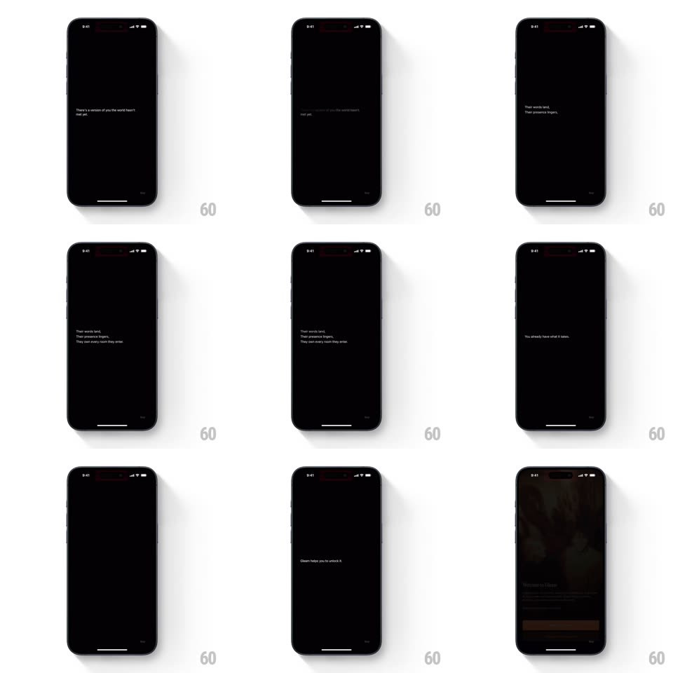

Media
Frame-by-frame

Rebuild this animation 1:1: Gleam's intro text sequence - on a black screen, short poetic lines fade in one at a time, hold, and fade out, ending on "Gleam helps you unlock it." before the welcome screen.

Rebuild this animation 1:1: Gleam's intro text sequence - on a black screen, short poetic lines fade in one at a time, hold, and fade out, ending on "Gleam helps you unlock it." before the welcome screen.
## Integration
Integration: stack-agnostic spec - springs given as stiffness/damping, timed motions as duration + curve; map every value to your framework and animation library of choice.
## Scene
A black full-screen intro with a small Skip option bottom right: centered white serif text advances through a scripted sequence ("there's a version of you the world hasn't met yet." -> "Their words land, their presence lingers, they own every room they enter." -> "You already have what it takes." -> "Gleam helps you unlock it.").
## Motion spec
Pattern: sequential fade-in / hold / fade-out per line, ~3.2s per beat.
- Each line fades in (600ms, ease-out) with a very slight rise (translateY 8px -> 0), holds (~1.6s), then fades out (500ms) as the next line fades in 100ms later - a brief crossfade, never a hard cut.
- Multi-sentence lines set their sentences sequentially within the same fade (each clause appears ~250ms after the previous).
- The final line holds longer (~2.2s) before the whole intro fades to the welcome screen (500ms).
- Skip is always visible and tappable; tapping it cuts straight to the welcome fade.
## Calibration
- One line (or clause group) on screen at a time; no stacking.
- The rise is subtle - barely perceptible motion, mostly opacity.
## Reduced motion
Text fades with no rise; beat timing unchanged.
## Don't miss
- Serif type, centered, generous line height - the typography carries it.
- The crossfade between lines is short and clean; no overlap of two full lines at high opacity.